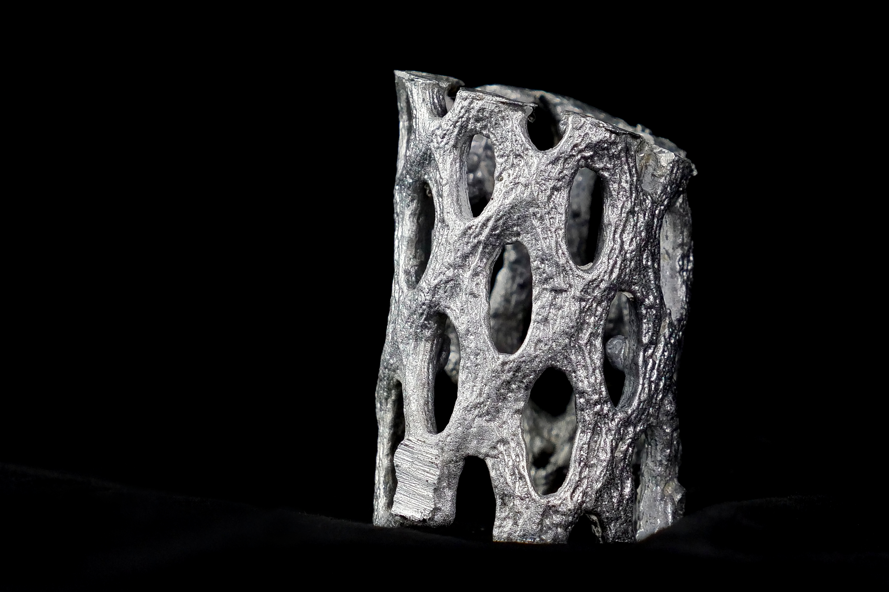
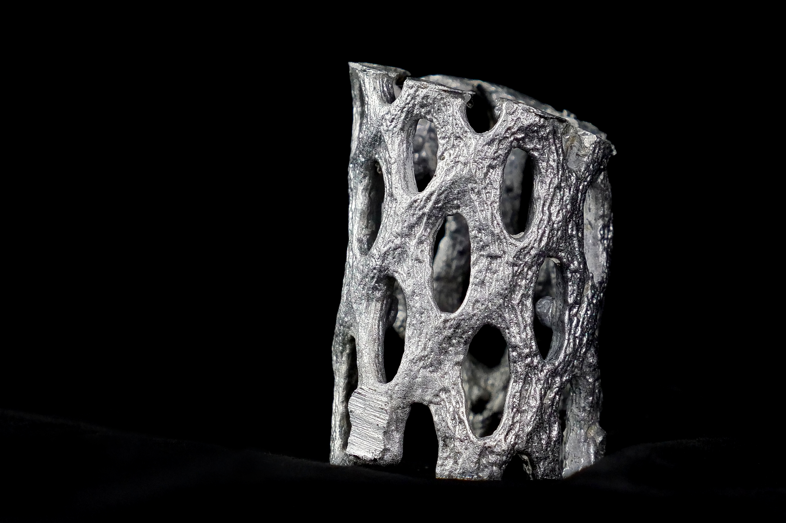
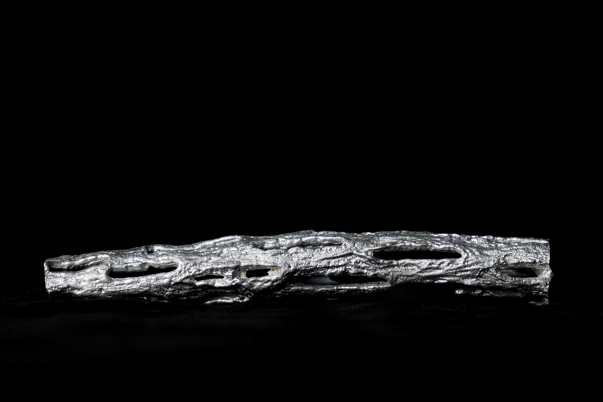
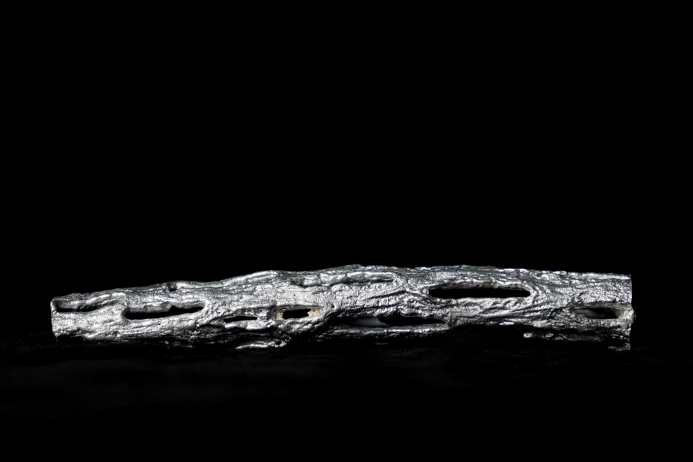

Rescultaya
by Ty Pham-Swann

↓
 



 



In 2019, I began metal casting with two main goals in mind: developing new metal casting forms inspired by structures in the Sonoran desert, and create sustainable casting processes that could subsist on recycled materials. After around two years of development, I ultimately reached these goals, creating two sustainable techniques for sculpture casting using solely non-cast aluminum alloys, reducing the energy footprint of production substantially. I launched Rescultaya around these techniques, where I sold abstract aluminum sculptures from community-sourced recycled aluminum. In total, Rescultaya recycled multiple tons of scrap aluminum.